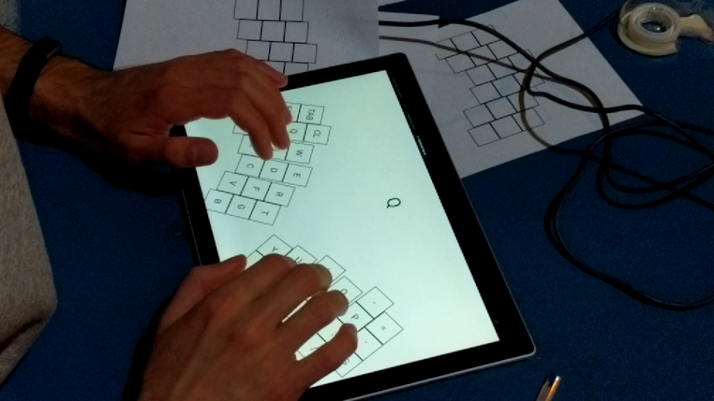

A 40-year old research question
In 1981, Donald Norman co-authored a paper that questioned the usefulness of learning alternative keyboard layouts [1]. They concluded the paper urging the readers to not "waste time re-arranging the letters", but rather to explore the other aspects of keyboard design that are poorly justified: it's size, the stagerring of keys, the fact that it is not separated in two halves - one for each hand, or the apparent wasteful use of the thumb, among others.

My first time building a custom keyboard - a Redox wireless
In 2021, most of these physical layout decisions are still unjustified. Research has shown that keys are much larger than they have to be, even for the people with large hands and thick fingers [2][3]. Splitting the keyboard in two halves and angling them is also believed to be more ergonomical [4][5].
Nowadays, some of these issues are addressed by custom-built keyboards, such as the Redox, or even 3-d printing one, such as the Dactyl Manuform. I wanted to try designing a keyboard from scratch that applied these research findings, while also being reasonably simple to produce.
Digital mockups
One challenging aspect of designing a new physycal layout is trying it out. I made a semi-funcional prototype where I could iteratively design a layout in Figma and export the .svg to try it out on my touchscreen. It provides feedback for which key is being pressed, something that a pure paper mockup can't. However, it is still far from the experience of typing on real keys, and is constrained to a single plane. The code is available on my Github
Physical mockups
To test the positioning of a "thumb cluster", and figure out if it could be any comfortable at all, I built some physical mockups:
1) Cardboard mockup with regular keys
The keys were too high-profile, requiring a "claw-like" hand posture to use. Not very comfortable
2) Cardboard mockup with low-profile keys
Low-profile keys, felt better, but the 90-degree angle for the thumb cluster still felt too open.
3) Clay mockup with low-profile keys and customized ("dremelled") keycaps
I included customized, smaller keycaps to get a feel of the whole keyboard, with they reduced pitch I aim to use.
Next steps
This project is still a work in progress. The goal now is building a functional prototype, using the layout tested (physically and digitally) above. Being more familiar with Python than C, I plan to use a Raspberry Pi Pico as the controller.